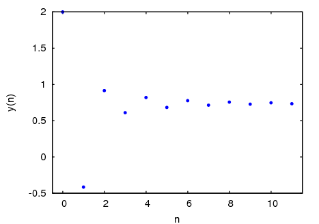
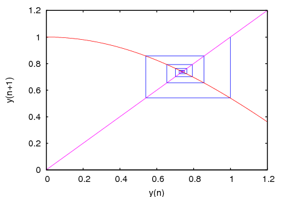
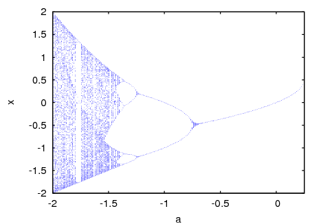
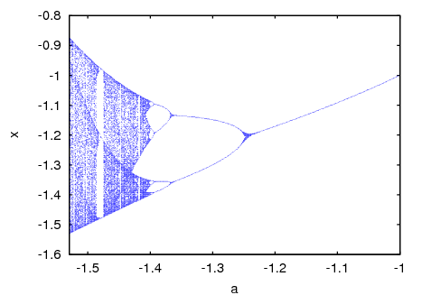
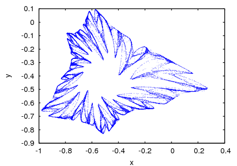
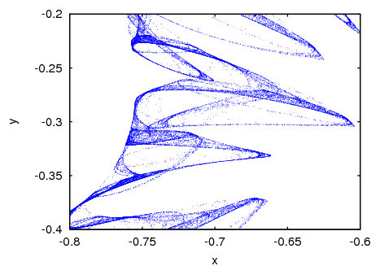
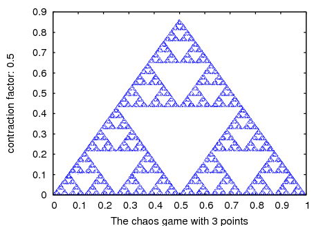
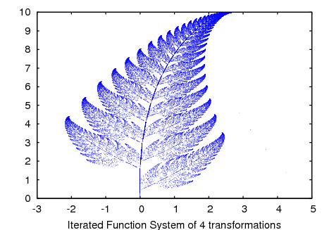
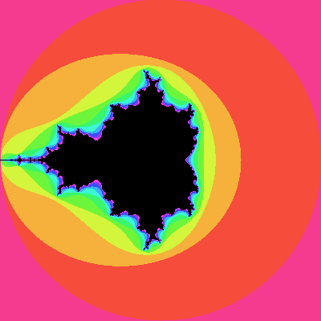
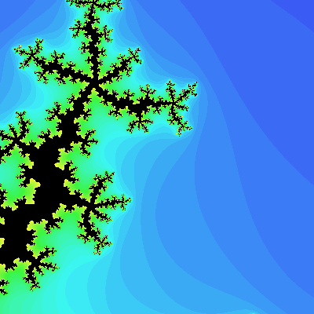

El paquete adicional dynamics incluye varias funciones para crear diversas representaciones gráficas de sistemas dinámicos y fractales, y además una implementación del método numérico de Runge-Kutta de cuarto orden, para resolver sistemas de ecuaciones diferenciales.
Para usar las funciones en este paquete será necesario primero que todo cargarlo con load("dynamics"), y las funciones que crean gráficas necesitan que Xmaxima esté instalado.
y(n+1) = F(y(n))
Con valor inicial y(0) igual a y0. F deberá ser una expresión que dependa únicamente de la variable y (y no de n), y0 deberá ser un número real y n un número entero positivo.
x(n+1) = F(x(n), y(n)) y(n+1) = G(x(n), y(n))
Con valores iniciales x0 y y0. F y G deben ser dos expresiones que dependan únicamente de x y y.
La selección aleatoria de uno de los m puntos atractivos puede ser realizada con una función de probabilidad no uniforme, definida con los pesos r1,...,rm. Esos pesos deben ser dados en forma acumulada; por ejemplo, si se quieren 3 puntos con probabilidades 0.2, 0.5 y 0.3, los pesos r1, r2 y r3 podrían ser 2, 7 y 10, o cualquier otro grupo de números que tengan la misma proporción.
Se asignan diferentes colores a los puntos que no pertenecen al conjunto de Julia, de acuerdo con el número de iteraciones que demore la secuencia, comenzando en ese punto, a salir fuera del círculo de convergencia con radio 2. El número máximo de iteraciones se define con la opción levels; después de ejecutadas ese número de iteraciones, si la secuencia aun está dentro del círculo de convergencia, el punto será coloreado con el color definido por la opción color.
Todos los colores usados para los puntos que no pertenecen al conjunto de Julia tendrán los mismos valores de saturación (saturation) y valor (value), pero con diferentes ángulos de tonalidad, distribuidos uniformemente en el intervalo entre hue y (hue + huerange).
Se puede dar a la función una secuencia de opciones. La lista de posibles opciones aparece en una sección más al frente.
Se asignan diferentes colores a los puntos que no pertenecen al conjunto de Mandelbrot, de acuerdo con el número de iteraciones que demore la secuencia generada por ese punto a salir fuera del círculo de convergencia con radio 2. El número máximo de iteraciones se define con la opción levels; después de ejecutadas ese número de iteraciones, si la secuencia aun está dentro del círculo de convergencia, el punto será coloreado con el color definido por la opción color.
Todos los colores usados para los puntos que no pertenecen al conjunto de Mandelbrot tendrán los mismos valores de saturación (saturation) y valor (value), pero con diferentes ángulos de tonalidad, distribuidos uniformemente en el intervalo entre hue y (hue + huerange).
Se puede dar a la función una secuencia de opciones. La lista de posibles opciones aparece en una sección más al frente.
La función F(y) define una secuencia que comienza con un valor inicial y0, igual que en el caso de la función evolution, pero en este caso la función también dependerá del parámetro x, el cual tomará valores comprendidos en el intervalo de x0 a xf, con incrementos xstep. Cada valor usado para el parámetro x se muestra en el eje horizontal. En el eje vertical se mostrarán n2 valores de la sucesión y(n1+1),..., y(n1+n2+1), obtenidos después de dejarla evolucionar durante n1 iteraciones iniciales.
La variable independiente se representa con dominio, que debe ser una lista con cuatro elementos, como por ejemplo:
[t, 0, 10, 0.1]
el primer elemento de la lista identifica la variable independiente, el segundo y tercer elementos son los valores inicial y final para esa variable, y el último elemento da el valor de los incrementos que deberán ser usados dentro de ese intervalo.
Si se van a resolver m ecuaciones, deberá haber m variables dependientes v1, v2, ..., vm. Los valores iniciales para esas variables serán inic1, inic2, ..., inicm. Continuará existiendo apenas una variable independiente definida por la lista domain, como en el caso anterior. EDO1, ..., EDOm son las expresiones que definen las derivadas de cada una de las variables dependientes en función de la variable independiente. Las únicas variables que pueden aparecer en cada una de esas expresiones son la variable independiente y cualquiera de las variables dependientes. Es importante que las derivadas EDO1, ..., EDOm sean colocadas en la lista en el mismo orden en que fueron agrupadas las variables dependientes; por ejemplo, el tercer elemento de la lista será interpretado como la derivada de la tercera variable dependiente.
El programa intenta integrar las ecuaciones desde el valor inicial de la variable independiente, hasta el valor final, usando incrementos fijos. Si en algún paso una de las variables dependientes toma un valor absoluto muy grande, la integración será suspendida en ese punto. El resultado será una lista con un número de elementos igual al número de iteraciones realizadas. Cada elemento en la lista de resultados es también una lista con m+1 elementos: el valor de la variable independiente, seguido de los valores de las variables dependientes correspondientes a ese punto.
y(n+1) = F(y(n))
La interpretación y valores permitidos de los parámetros de entrada es la misma que para la función evolution. Un diagrama de escalera consiste en una gráfica de la función F(y), junto con la recta G(y) = y. Se comienza por dibujar un segmento vertical desde el punto (y0, y0) en la recta, hasta el punto de intersección con la función F. En seguida, desde ese punto se dibuja un segmento horizontal hasta el punto de intersección con la recta, (y1, y1); el procedimiento se repite n veces hasta alcanzar el punto (yn, yn).
Opciones
Cada opción es una lista con dos o más elementos. El primer elemento en la lista es el nombre de la opción y el resto consiste en los argumentos para esa opción.
Las opciones aceptadas por las funciones evolution, evolution2, staircase, orbits, ifs y chaosgame son las siguientes:
Las opciones aceptadas por los programas julia y mandelbrot son las siguientes:
Ejemplos
Representación gráfica y diagrama de escalera de la secuencia: 2, cos(2), cos(cos(2)),...
(%i1) load("dynamics")$
(%i2) evolution(cos(y), 2, 11, [yaxislabel, "y"], [xaxislabel,"n"]);
(%i3) staircase(cos(y), 1, 11, [domain, 0, 1.2]);


Si su procesador es lento, tendrá que reducir el número de iteraciones usado en los ejemplos siguientes. Y el valor de pointsize que da mejores resultados depende del monitor y de la resolución que use. Tendrá que experimentar con diferentes valores.
Diagrama de órbitas para el mapa cuadrático
y(n+1) = x + y(n)^2
(%i4) orbits(y^2+x, 0, 50, 200, [x, -2, 0.25, 0.01], [pointsize, 0.9]);

Para ampliar la región alrededor de la bifurcación en la parte de abajo, cerca de x = -1.25, use el comando:
(%i5) orbits(x+y^2, 0, 100, 400, [x,-1,-1.53,-0.001], [pointsize,0.9],
[ycenter,-1.2], [yradius,0.4]);

Evolución de un sistema en dos dimensiones, que conduce a un fractal:
(%i6) f: 0.6*x*(1+2*x)+0.8*y*(x-1)-y^2-0.9$
(%i7) g: 0.1*x*(1-6*x+4*y)+0.1*y*(1+9*y)-0.4$
(%i8) evolution2d([f,g],[-0.5,0],50000,[pointsize,0.7]);

Y una ampliación de una pequeña región en el fractal:
(%i9) evolution2d([f,g],[-0.5,0],300000,[pointsize,0.7], [xcenter,-0.7],
[ycenter,-0.3],[xradius,0.1],[yradius,0.1]);

Una gráfica del triangulo de Sierpinsky, obtenida con el juego del caos:
(%i9) chaosgame([[0, 0], [1, 0], [0.5, sqrt(3)/2]], [0.1, 0.1], 1/2,
30000, [pointsize,0.7]);

El helecho de Barnsley, obtenido con el Sistema de Funciones Iteradas:
(%i10) a1: matrix([0.85,0.04],[-0.04,0.85])$
(%i11) a2: matrix([0.2,-0.26],[0.23,0.22])$
(%i12) a3: matrix([-0.15,0.28],[0.26,0.24])$
(%i13) a4: matrix([0,0],[0,0.16])$
(%i14) p1: [0,1.6]$
(%i15) p2: [0,1.6]$
(%i16) p3: [0,0.44]$
(%i17) p4: [0,0]$
(%i18) w: [85,92,99,100]$
(%i19) ifs(w,[a1,a2,a3,a4],[p1,p2,p3,p4],[5,0],50000,[pointsize,0.9]);

Para crear un fichero llamado dinamica9.xpm con la representación gráfica del conjunto de Mandelbrot, con 12 colores, use el comando:
mandelbrot([filename,"dinamica9"])$

y el conjunto de Julia del número (-0.55 + i 0.6) puede ser obtenido con:
julia(-0.55, 0.6, [levels, 36], [center, 0, 0.6], [radius, 0.3],
[hue, 240], [huerange, -180], [filename, "dinamica10"])$
la gráfica se guardará en el fichero dinamica10.xpm y mostrará la región desde -0.3 hasta 0.3 en la dirección x, y desde 0.3 hasta 0.9 en la dirección y. Serán usados 36 colores, comenzando con azul e terminando con amarillo.

Para resolver numéricamente la ecuación diferencial
dx/dt = t - x^2
Con valor inicial x(t=0) = 1, en el intervalo de t desde 0 hasta 8, y con incrementos de 0.1, se usa:
(%i20) resultados: rk(t-x^2,x,1,[t,0,8,0.1])$
los resultados quedarán guardados en la lista resultados.
Para resolver numéricamente el sistema:
dx/dt = 4-x^2-4*y^2 dy/dt = y^2-x^2+1
para t entre 0 y 4, con valores iniciales -1.25 y 0.75 para (x, y) en t=0:
(%i21) sol: rk([4-x^2-4*y^2,y^2-x^2+1],[x,y],[-1.25,0.75],[t,0,4,0.02])$
This document was generated by Robert Dodier on agosto, 25 2007 using texi2html 1.76.
Created with the Personal Edition of HelpNDoc: Single source CHM, PDF, DOC and HTML Help creation